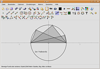

Geometriesoftware
Zum Verständnis dieses Artikels sind folgende Seiten hilfreich:
Unter Dynamischer Geometrie-Software (kurz DGS) versteht man Programme, die es ermöglichen geometrische Konstruktionen am Computer zu zeichnen. Dabei werden die Werkzeuge Zirkel und Lineal simuliert und das exakte Eingeben und Ausgeben von Werten ermöglicht. Durch die interaktive Umgebung lassen sich damit auch sehr anschaulich geometrische Gesetze vermitteln. So wird diese Software oft für den Schulunterricht genutzt. Auch können die meisten Programme neben dem eigenen Format auch in Pixel- und Vektorgrafiken exportieren.
Geonext¶
Bei Geonext  handelt es sich um ein von der Universität Bayreuth entwickeltes Java-Programm, welches unter der GPL zur Verfügung gestellt wurde. Es ermöglicht eine Vielzahl von geometrischen Operationen, erstellt auch ein Konstruktionsprotokoll und unterstützt anschauliche Animationen. Auch das Zeichnen von Graphen wird unterstützt. Der Export nach HTML als eingebundenes Java-Applet, als PNG und als SVG ist ebenfalls möglich.
handelt es sich um ein von der Universität Bayreuth entwickeltes Java-Programm, welches unter der GPL zur Verfügung gestellt wurde. Es ermöglicht eine Vielzahl von geometrischen Operationen, erstellt auch ein Konstruktionsprotokoll und unterstützt anschauliche Animationen. Auch das Zeichnen von Graphen wird unterstützt. Der Export nach HTML als eingebundenes Java-Applet, als PNG und als SVG ist ebenfalls möglich.
Installation¶
Leider sind von Geonext keine Debian-Pakete vorhanden, so muss man das Programm über ein Installations-Skript installieren.
Zunächst sollte man überprüfen, ob eine aktuelle Java-Version installiert ist. Anschließend lädt man von der Projektseite die Installationsdatei (ohne Java Runtime Environment) für Linux herunter und startet diese anschließend mit folgendem Befehl im Terminal [3] mit Root-Rechten[8]:
sudo sh ./geonext_linux.bin
Hinweis!
Fremdsoftware kann das System gefährden.
Nun braucht man nur noch den Dialogen zu folgen. Als Installationsort ist allerdings /opt/geonext zu bevorzugen. Als "Link Folder" gibt man am besten /usr/local/bin an, dann kann man anschließend das Programm direkt über den Befehl GEONExT starten [5].
GeoGebra¶
GeoGebra ist eine sehr bekannte freie Geometriesoftware (GPL/CC  ) mit großem Funktionsumfang. Sie unterstützt neben den normalen Funktionen beispielsweise auch das Einfügen von Bildern für Beispielzwecke und eine Übersicht aller verwendeten Punkte, welche sich nachträglich editieren bzw. von Hand verschieben lassen, wobei alle abhängigen Elemente angepasst werden. Es sind wirklich alle zum Konstruieren nötigen Funktionen verfügbar. Das sehr übersichtlich gestaltete Programm verfügt außerdem über einen Export in die Formate PNG, PDF, EPS, SVG und EMF sowie als LaTeX-PSTricks-Quellcode. Auch kann man entwickelte Konstruktionen als dynamisches Java-Applet in HTML einbinden. (mehr)
) mit großem Funktionsumfang. Sie unterstützt neben den normalen Funktionen beispielsweise auch das Einfügen von Bildern für Beispielzwecke und eine Übersicht aller verwendeten Punkte, welche sich nachträglich editieren bzw. von Hand verschieben lassen, wobei alle abhängigen Elemente angepasst werden. Es sind wirklich alle zum Konstruieren nötigen Funktionen verfügbar. Das sehr übersichtlich gestaltete Programm verfügt außerdem über einen Export in die Formate PNG, PDF, EPS, SVG und EMF sowie als LaTeX-PSTricks-Quellcode. Auch kann man entwickelte Konstruktionen als dynamisches Java-Applet in HTML einbinden. (mehr)
Zirkel und Lineal¶
 Zirkel und Lineal (kurz Z.u.L.) wurde von einem Professor der Katholischen Universität Eichstätt-Ingolstadt geschrieben, er soll dabei großen Wert auf die Benutzerfreundlichkeit gelegt haben. Im Test konnte diese allerdings nicht wirklich überzeugen und wirkte eher etwas unaufgeräumt und langsam. Das Java-Programm ist ebenfalls unter der GPL veröffentlicht worden und bietet ähnliche Funktionen wie Geonext; zusätzlich sind Makros und ein Export in EPS, PDF und FIG möglich.
Installation¶
Auch diese Software steht nur als Installationspaket (allerdings ohne Installer) zur Verfügung und es wird ebenfalls eine aktuelle Version von Java benötigt.
Zunächst lädt man das Installationspaket (Z.u.L.-Archiv) von der Webseite herunter. Danach entpackt [4] man es, wechselt mit dem Terminal [3] in den Unterordner doc_de und startet die Applikation mit folgendem Befehl:
java -jar zirkel.jar
Für eine Installation muss dieser Ordner an einen geeigneten Ort (beispielsweise /opt/zirkelundlineal) kopiert werden und eventuell ein Startmenü-Eintrag eingerichtet [7] werden.
Hinweis!
Fremdsoftware kann das System gefährden.
CaRMetal¶
CaRMetal basiert auf Zirkel und Lineal, bietet aber eine andere grafische Oberfläche im MacOS-Stil. Es beherrscht deswegen alle Funktionen des Basisprogramms und verwendet ebenfalls Java und GPL, hat allerdings den Autoren nach ein verbessertes Bedienungskonzept, welches ohne Zwischenschritte über Dialoge direkten Zugriff auf alle Funktionen geben soll. In CaRMetal werden Konstruktionen mit Hilfe einer Haupt-Palette und zwei Optionen-Paletten für Makros und Objekteigenschaften erstellt.
Installation¶
Für eine Installation lädt man einfach das dort angebotene Debian-Paket von der Projektseite herunter und installiert [6] es.
Hinweis!
Fremdsoftware kann das System gefährden.
Cinderella¶
Cinderella ist eine in Java geschriebene, sehr umfangreiche Geometrie-Software. Zwischenzeitlich war Cinderella in der aktuellen Version nur kommerziell zu erwerben, seit ein paar Jahren ist die Benutzung aber wieder kostenlos möglich. Lediglich zur Personalisierung der Kopie ist eine kostenpflichtige Lizenz nötig.
Installation¶
Man lädt das Programm hier  herunter und startet den Installer mit dem Befehl
herunter und startet den Installer mit dem Befehl
sudo sh Cinderella_unix_2_8.sh
Soll die Installation im Verzeichnis des aktuellen Benutzers erfolgen, lässt man den sudo-Befehl weg.
Hinweis!
Fremdsoftware kann das System gefährden.
Sonstige¶
GeoProof
(GTK, GPL) Gambol
(Java, GPL) Xcas
(C++, GPL) OpenEuclide
(GTK, GPL) KGeo
(Qt, GPL) PyGeo
(Python, GPL) SingSurf
(Java, CC)
unfrei¶
Geometry Explorer
(Java, Copyright) GRACE
(Java, Copyright) GCLC
(Latex / Befehlszeile, Copyright) JavaView
(Java, Copyright)
kommerziell¶
Archimedes Geo3D
(kommerziell) Geometry Expressions
(kommerziell, Linux-Version als Beta kostenlos)
Eine Liste von weiteren Programmen findet sich in der englischen Wikipedia.
- Erstellt mit Inyoka
-
 2004 – 2017 ubuntuusers.de • Einige Rechte vorbehalten
2004 – 2017 ubuntuusers.de • Einige Rechte vorbehalten
Lizenz • Kontakt • Datenschutz • Impressum • Serverstatus -
Serverhousing gespendet von